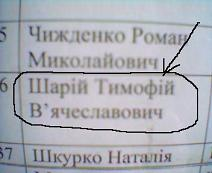

|  | ШАРИЙ Т.B. «…Все выше и выше и выше…» Это об уровне научной работы, которой я занимался в течение 4 лет… не надо говорить, что я не умею считать! 2007 – 2002 = сколько?? Вот-вот… |
#include "AfxWin.h";
#include "Parents.h";
#include "BS.h";
#include "Prepod.h";
class MS: public Parents // класс "Магистр", наследуется от класса "Родители"
{
CString cBirthDate; // дата рождения
CString cCity; // город проживания
bool bMarried; // семейное положение (true=жонатый)
CString cICQNo; // номер аськи
CString cPhoneNo; // номер моб.телефона
friend class BS; //дружественный класс "Бакалавр"
friend class Prepod; //дружественный класс "Препод"
public:
MS(); // конструктор магистра
void SetInfo(CString, // заполнить поля
CString,bool,CString,CString);
//...
};
void main()
{
MS ShariyTimothy; // магистр "Шарий Т.В."
ShariyTimothy.SetInfo("01.05.1986",
"Донецк",
false,
"215-359-888",
"8-050-769-61-79");
//...
}